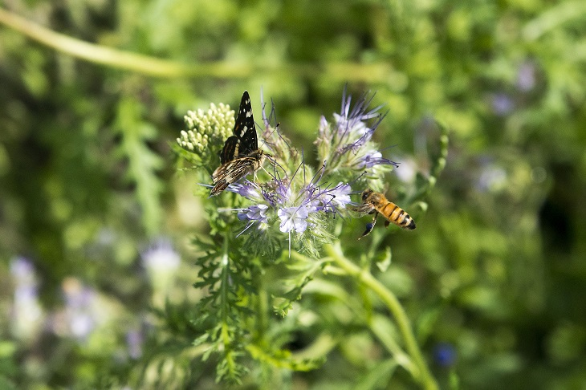
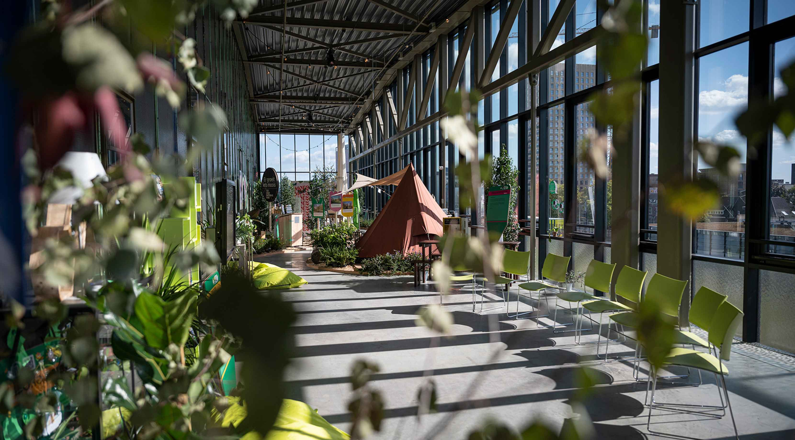
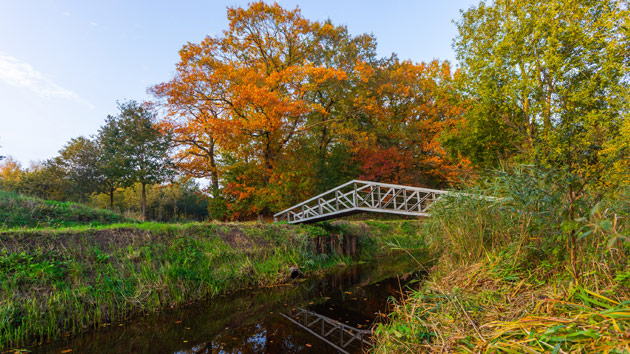

Over het project
Om Tilburgers de natuur te laten missen, hebben bij een hoax gecreeërd. Hiermee hopen wij u wat informatie en motivatie te geven zodat u kan bijdragen aan de natuur in Tilburg.
Op deze website lees je waarom natuur zo belangrijk is en wat jij kunt doen om bij te dragen aan een groene stad.
Bijdragen?
Hoe kunt u bijdragen?
Plant iets groens
Meer planten en bloemen zorgen voor meer leven in de stad.
Laat geen afval achter
Samen houden we parken en natuurgebieden schoon en fijn voor iedereen.
Ontdek natuur dichtbij
Verken groene plekken in Tilburg en geniet van wat de stad te bieden heeft.
Handige websites en samenwerkingen

Gemeente Tilburg - Natuur
Informatie over natuur, groen en duurzaamheid in Tilburg.
Bekijk website
Lochal Stadsnatuur
Inspiratie, tips en projecten voor meer stadsnatuur en biodiversiteit.
Bekijk website
IVN-Tilburg
Ontdek de natuur en activiteiten om bij te dragen aan het groene hart van de stad.
Bekijk website